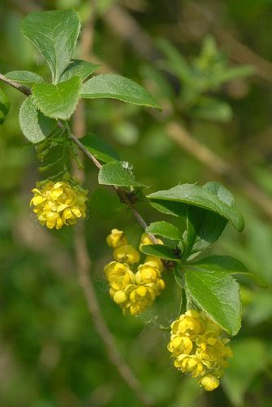
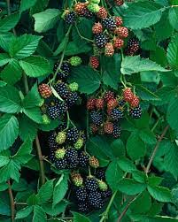
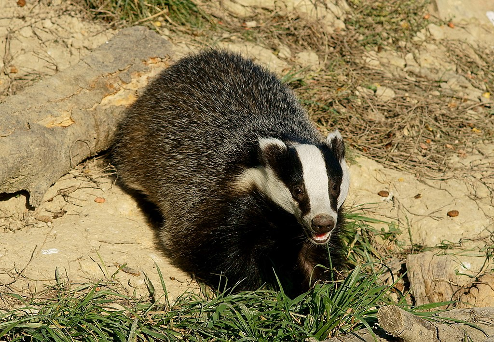
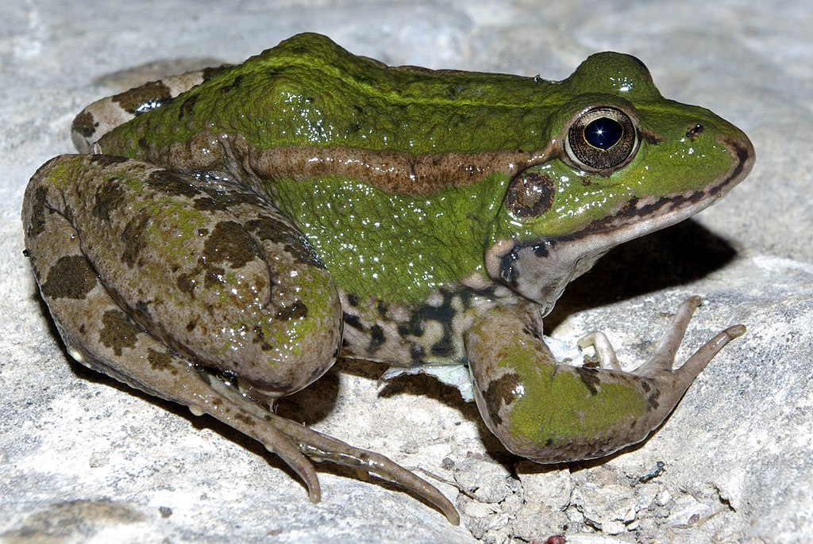

Collebeato è un comune situato nella provincia di Brescia, in Italia.
La regione circostante offre una varietà di habitat che sostengono una ricca fauna e flora.
La vegetazione predominante a Collebeato è tipica delle zone collinari della Lombardia.
Nelle aree più basse, si trovano prevalentemente coltivazioni agricole come vigneti, frutteti e campi di cereali.
Salendo sulle colline, si possono osservare boschi di latifoglie miste, principalmente querce, castagni e carpini.
Questi boschi offrono rifugio a molte specie animali e presentano una varietà di piante erbacee e arbustive.
Tra le piante caratteristiche della regione, troviamo l'edera(Hedera helix),
che si arrampica sui tronchi degli alberi, e il crespino (Berberis vulgaris), un arbusto spinoso con fiori gialli e bacche rosse.
Altre specie comuni includono il biancospino (Crataegus monogyna), il sambuco (Sambucus nigra) e il rovo (Rubus fruticosus).




;
La fauna di Collebeato comprende diverse specie di mammiferi, uccelli, rettili, anfibi e insetti.
Tra i mammiferi più comuni, si possono avvistare lepri (Lepus europaeus), tassi (Meles meles),
volpi (Vulpes vulpes) e ricci (Erinaceus europaeus). È anche possibile incontrare
caprioli (Capreolus capreolus) e cervi (Cervus elaphus) nelle zone boschive circostanti.




Per quanto riguarda gli uccelli, sono presenti numerose specie che abitano l'area, sia residenti che migratorie.
Tra queste ci sono la cincia (Parus major), il pettirosso (Erithacus rubecula), la tortora (Streptopelia turtur)
e il picchio verde (Picus viridis). Durante il periodo migratorio,
è possibile avvistare diverse specie di uccelli acquatici sulle acque dolci dei laghi e dei fiumi vicini.


Anche i rettili e gli anfibi sono presenti a Collebeato. Tra i rettili, si possono trovare lucertole
come la lucertola muraiola (Podarcis muralis) e il ramarro (Lacerta bilineata).
Per quanto riguarda gli anfibi, ci sono diverse specie di rane, come la rana verde (Pelophylax)
e la raganella (Hyla intermedia), che si possono trovare nelle zone umide.


